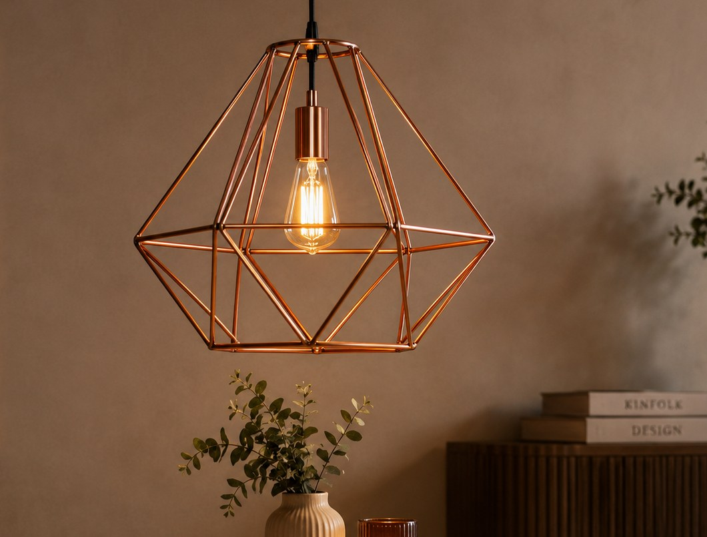
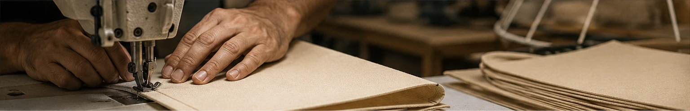

Design técnico para marcas
Cúpulas para marcas que valorizam forma e acabamento
Desenvolvemos cúpulas em formatos, materiais, cores e medidas definidos para cada projeto.
Fabricação sob encomenda
Precisão para transformar especificações em produto
A Center Cúpulas atende operações de atacado que precisam desenvolver ou repetir modelos com identidade visual coerente.
- 01Projeto configurável
Escolha entre diversos formatos ou apresente uma geometria personalizada.
- 02Materiais e cores
Juta natural ou tricoline em cores variadas, conforme a necessidade do projeto.
- 03Avaliação da fábrica
Formatos e medidas passam por análise de viabilidade antes da confirmação.

Do catálogo à conversa
Um começo simples para um projeto sob encomenda
- 01
Parta de uma referência
Use uma medida sugerida ou informe as dimensões do seu projeto.
- 02
Personalize a cúpula
Defina formato, material e cor; depois inclua observações relevantes.
- 03
Solicite a avaliação
Envie a configuração para a fábrica analisar a viabilidade e preparar o orçamento.

Center Cúpulas
Conhecimento de fabricação com visão de parceria
Combinamos cuidado técnico, leitura de proporção e atenção ao acabamento para apoiar lojas, revendedores, montadoras e marcas de iluminação.
ConsistênciaFlexibilidadeCuidado técnico
Vamos configurar seu modelo?